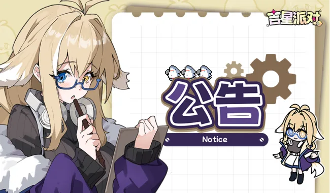

版本与公告官方原文 ↗
官方公告/185
关于打击非法脚本行为的处理公告 发布ID：185 亲爱的玩家： 为维护公平公正的游戏环境，保障各位玩家的游戏体验，《吉星派对》运营团队持续对使用非法脚本、第三方工具等违规行为进行严厉打击。近期，我们通过技术监测与玩家举报，发…
关于打击非法脚本行为的处理公告 发布ID：185 亲爱的玩家： 为维护公平公正的游戏环境，保障各位玩家的游戏体验，《吉星派对》运营团队持续对使用非法脚本、第三方工具等违规行为进行严厉打击。近期，我们通过技术监测与玩家举报，发现有部分工作室及账号利用脚本恶意参与匹配，严重影响了游戏的正常秩序与其他玩家的体验。 根据游戏内用户协议及相关规则，我们已对核实确认使用非法脚本的账号进行了永久封禁处理。本次共处罚违规账号5000余个，并将持续加强对该类行为的监控与处罚力度。 此外，我们封禁了存在消极行为和破坏游戏环境的账号，我们呼吁各位玩家与我们一同守护纯净的游戏环境，坚决抵制一切作弊行为和破坏游戏环境的行为。如您在游戏中发现任何可疑行为，请通过游戏内【设置】-【联系客服】入口进行举报，我们将第一时间核查处理。 感谢各位玩家对《吉星派对》的支持与热爱。 《吉星派对》运营团队 2026年5月28日